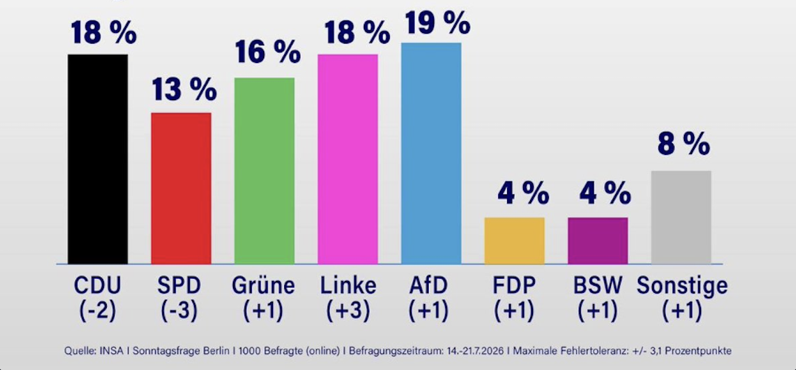

Vorn, und schon zu verbieten

In 59 Tagen wählt Berlin ein neues Abgeordnetenhaus, und zum ersten Mal führt die AfD eine Umfrage an. 19 Prozent, sagt das INSA-Institut im Auftrag von NIUS. Kristin Brinker vor CDU und Linke, die beide bei 18 liegen.
Ein Wert, kein Erdrutsch. Drei Tage zuvor kam Infratest dimap im Auftrag des RBB zum umgekehrten Bild: Linke 22, CDU 20, Grüne 17, die AfD auf Platz vier. Dieselbe Stadt, dieselben Wochen, entgegengesetzte Reihenfolge. Bei einer Fehlertoleranz von 3,1 Punkten sind 19, 18 und 18 kein Rennen, sondern ein Knäuel. Wer „Platz 1“ liest, liest eine von mehreren möglichen Lesarten eines Fotofinishs.
Interessant ist nicht die Nachkommastelle. Interessant ist, was in derselben Woche passiert, in der eine Umfrage die AfD in Berlin vorne sieht. In Niedersachsen sortieren Wahlausschüsse AfD-Bewerber von den Kommunalwahlen. Unter einem Beitrag der Tagesschau wirbt der offizielle Account der Grünen für ein Verbotsverfahren. Die CDU hat gerade ihren Spitzenkandidaten Wegner verloren und rutscht.
Das Muster ist das alte. Steigt die Partei in der Gunst, steigt der Ruf nach dem Verbot. Was nicht steigt, ist die Bereitschaft, sie an der Wahlurne zu schlagen.
Man kann einen Kandidaten aus dem Amt sperren. Aus der Umfrage sperrt man ihn nicht.
Mehr dazu: Ein Drittel, das nicht sein darf · Wer verliert, sortiert aus